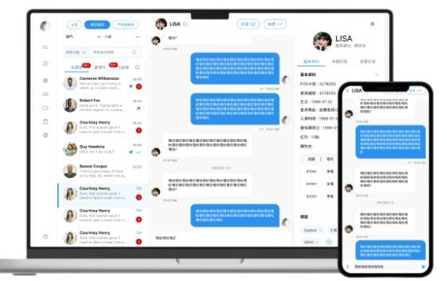
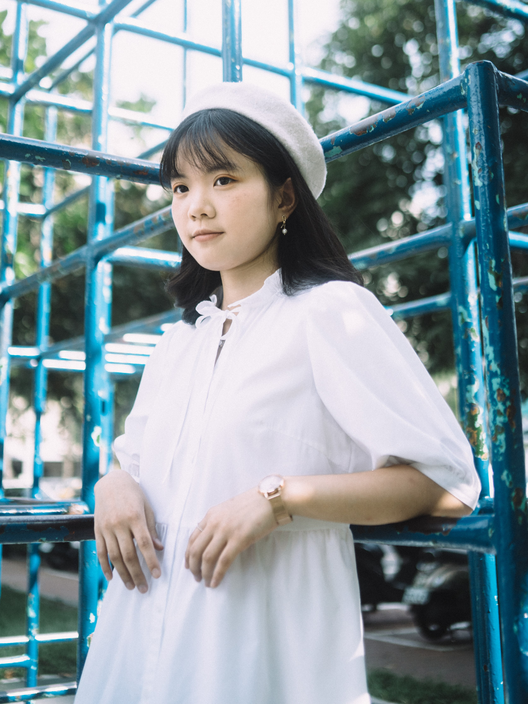
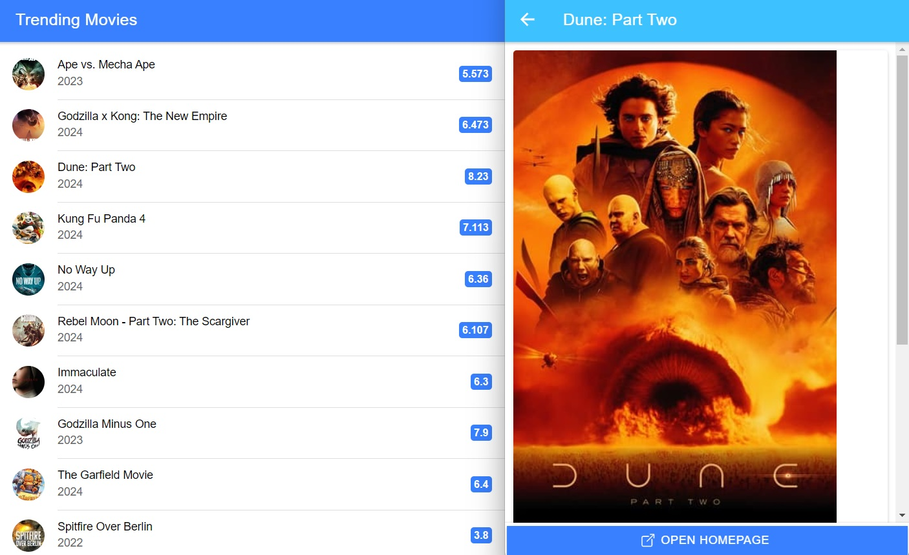
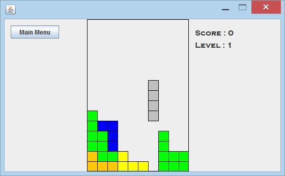
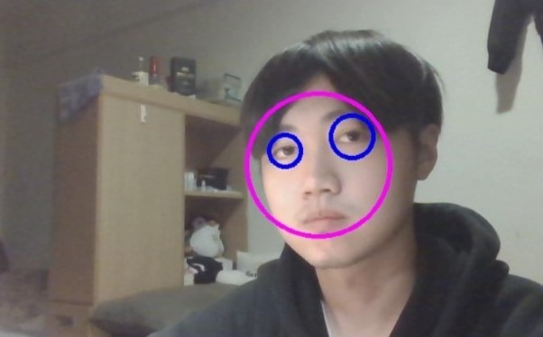
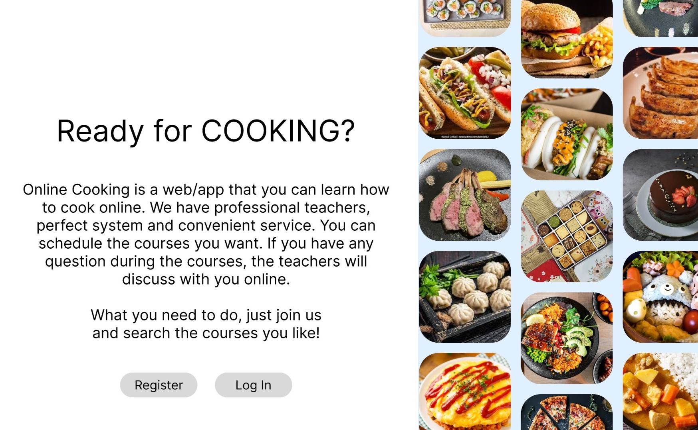

Hoya 2.0
公司內部數位工具後台（聊天模組、權限管理、數據分析）靜態畫面切版與 API 串接，讓服務員更即時解決客戶問題。
Full-Stack / Software Engineer
軟體工程師
現任全景軟體軟體工程師，以 Vue.js 與 C# / .NET Core 開發銀行及政府機關的文件影像管理系統，並主導無障礙網站開發，協助永豐 WebATM 取得 AAA 認證。

現於全景軟體股份有限公司擔任軟體工程師，以 Vue.js、C# / .NET Core 開發與維護銀行及政府機關的文件影像管理系統，工作涵蓋前後端開發、多國語系、無障礙網站、單元測試與弱點掃描，確保系統兼具良好使用性、相容性與資訊安全。曾主責 WebATM 無障礙功能開發，協助永豐銀行 WebATM 取得 AAA 無障礙認證。
具備 Full-Stack 開發能力，從前端介面、後端 API、資料庫設計串接到單元測試、弱點掃描皆有實務經驗，能掌握從開發到驗證的完整流程。善於從使用者回饋與實際工作情境中發掘需求，將問題轉化為可落地的解決方案，並持續優化與改進現有功能或流程。
負責公司影管系統前後端功能維護與開發 ，協助銀行及政府機關推動文件電子化，將文件集中於系統中管理，提升文件保存。透過權限管理機制控管文件及資料存取範圍，確保敏感資訊僅由授權人員存取，強化企業文件的安全管理。使用 Vue.js、C# / .NET Core 進行系統前後端開發與維護，工作範圍涵蓋多國語系、無障礙網站、單元測試、弱點掃描及問題排查等，確保系統具備良好的使用性、相容性與資訊安全性。
負責公司內部網頁開發，以及 EcLife購物網、Epson購物網等品牌代操購物網的維護與專案開發。開發 Hoya 2.0 讓服務員更即時解決客戶問題，上線首週已有 78 名服務員使用，目前已解決上百位消費者的問題。
課程結合貿易與科技，於 Introduction to Mobile App Design and Development 課程中學習架設與開發網站。
運用 LINE 熱點、LINE 購物等工具，結合 API 串接與 LINE Bot 技術達成數位轉型。

公司內部數位工具後台（聊天模組、權限管理、數據分析）靜態畫面切版與 API 串接，讓服務員更即時解決客戶問題。

芬蘭研習期間以 Angular 為框架，串接 The Movie Database（TMDb）API 導入電影資料。

以俄羅斯方塊發想，設計完整遊戲頁面，從輸入姓名、遊戲畫面到記分板皆由 Java 撰寫而成。

以筆電攝像頭實作，搭配 OpenCV 協助使用者在不直視鏡頭的情況下修正視線方向。

新冠肺炎期間與組員設計線上教學平台，並自學 UI 相關知識，以 Figma 呈現系統流程設計。
每月與各節日活動為代操品牌（Epson、Linksys 等）製作文宣、一頁式網站與電子報。